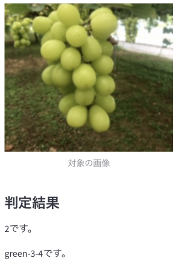
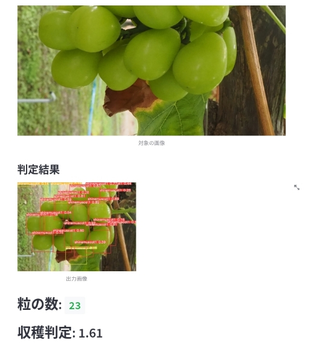
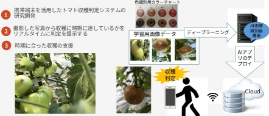
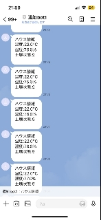

農業分野へのIT応用事例
１．シャインマスカットの収穫支援アプリ
※第２１２SE研究発表会で発表、HIT−２０２４で紹介
スマートフォンで撮影した写真から、収穫時期をリアルタイムに判定します。
AIによる判定結果
判定結果：(0,1,2の3段階中2)
0、2が収穫に適しており、0は2より甘く黄色に近いのが特徴です。経験の浅い生産者や、ぶどう狩りの収穫判定支援を目的としています。

２．シャインマスカットの収穫支援アプリ（YOLO-V5 粒カウント）
収穫時に撮影した写真から粒数のカウントと５段階の判定を自動で行います。

３．スマートグラスを用いたハンズフリー収穫支援
スマートグラス（Vuzix 400）を用いて、収穫作業中にハンズフリーで粒数のカウントと５段階の判定が可能です。VuzixViewとYOLO-V5を組み合わせています。

４．大玉トマト収穫支援システム
※農業情報学会２０２３年度年次大会で発表
３段階の着色（青、白、赤）を識別し、若就農者を対象とした収穫時期の判断をサポートします。

５．Raspberry Pi センサを用いた遠隔モニタリング
ハウス内の室温、湿度、土壌温度をセンサで測定し、遠隔地からモニタリング。現場への移動負担を軽減します。
※2025年4月以降、Line Messaging APIによる通知機能へ更新予定

６．ドローンを用いたリアルタイム中玉トマト着色判定
DJI TELLO、YOLO-V5、Raspberry Piを活用。収穫前にハウス内をドローンで飛行し、中玉トマトの着色状況（赤色の４段階識別）を確認します。